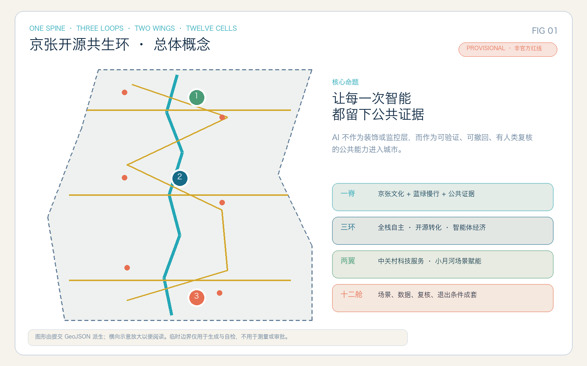
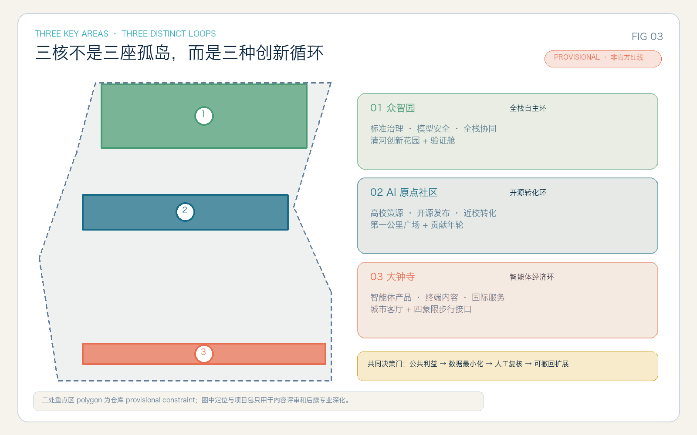
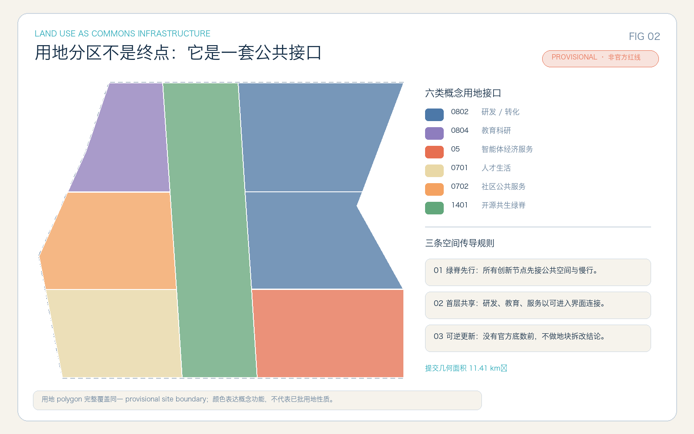
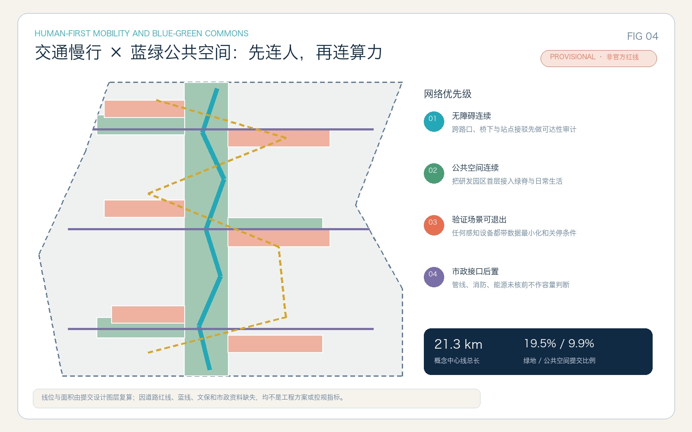
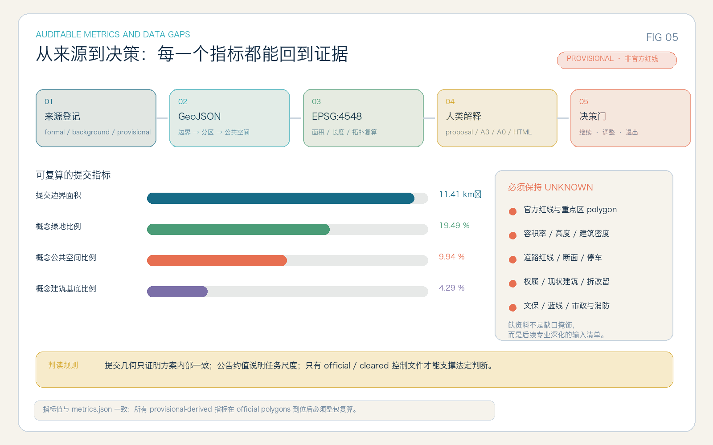

43.6 km² · 统筹研究范围
连接高校策源、开源协作、产业转化、科技服务和场景赋能；只使用公告面积与文字任务，不以 provisional polygon 作正式面积判断。
一条文化与公共空间脊、三类创新回路、两翼接口、十二个可验证场景舱。让每一次智能，都留下公共证据。
PROVISIONAL GEOMETRY · 非官方红线 · 待 official polygons 整包复算空间图由提交 GeoJSON 派生并为可读性横向示意放大。下列值用于核对提交包内部一致性，不是法定规划控制值。

连接高校策源、开源协作、产业转化、科技服务和场景赋能；只使用公告面积与文字任务，不以 provisional polygon 作正式面积判断。
以一脊三环两翼十二舱组织城市更新、公共空间、交通慢行和创新服务；提交边界为 provisional。
众智园、AI 原点社区、大钟寺分别承担全栈自主、开源转化和智能体经济回路；边界待官方 polygon 替换。

模型安全、标准治理、端侧算力与清河创新花园；所有空间动作均为概念建议。
开源发布、近校成果转化、人才协作与贡献年轮；以低扰动、可逆更新为前置。
智能体产品、终端内容、国际路演与公共服务；站点四象限仅表达步行接口关系。

七个 land-use feature 完整覆盖同一 submitted boundary；12 个建筑 footprint 只表达功能载体与体量原型。由于缺少现状建筑、宗地、权属和控规，任何保留、改造、拆除或新建判断都留待专业团队深化。
UNKNOWN：容积率、建筑高度、建筑密度控制、道路面积与退线。

一条南北共生绿脊、三条东西缝合连接和一条三核体验骑行链表达网络关系；不构成道路线位、桥隧、交通组织或市政工程结论。
每张卡同时声明服务对象、空间载体、最小数据和人工复核。02–04 为产业测试验证场景；所有场景必须允许暂停、纠错与退出。
AI 原点社区
众智园 · 产业验证
三核公共空间 · 产业验证
众智园 · 产业验证
共生绿脊
社区公共服务节点
AI 原点社区
遗址公园
大钟寺
原点社区
大钟寺
一带公共空间系统
| 项目包 | 首要动作 | 决策门 | 状态 |
|---|---|---|---|
| P01 共生绿脊 | 无障碍与慢行断点审计、轻量导视试点 | 道路 / 文保 / 绿地复核 | 概念建议 |
| P02 众智园验证花园 | 模型安全、端侧算力和标准治理公开验证 | 安全 / 能源 / 运营复核 | 概念建议 |
| P03 原点开源第一公里 | 开源发布、近校转化、人才与法务服务 | 权属 / 校园接口 / 版权复核 | 概念建议 |
| P04 大钟寺城市客厅 | 智能体产品路演、公共服务、步行接口 | 轨道 / 道路 / 企业清权复核 | 概念建议 |
| P05–P09 | 贡献年轮、公共服务共驾台、全球共生周、数据授权会客厅、评估档案 | 公共利益 / 数据最小化 / 人工复核 / 退出 | 概念建议 |
运营采用年度闭环：春季共生公约与需求征集、夏季产业验证季、秋季全球 AI 共生周、冬季公共审计与档案更新。活动名称、周期和主体均为参考方案，不构成政府安排或资金承诺。
| 公告 1.3 / 1.4 / 1.5 | 23 条全部映射 |
|---|---|
| agent.1–agent.6 | 正文、图层、指标、图纸、HTML 共同覆盖 |
| 专业标准 | 5 条 mandatory addressed |
| 设计深度 | 15 项 complete |
| 边界精度 | provisional · 待 official polygons 复算 |

正式任务依据来自仓库登记的官方公告、清权智能体任务书和专业标准；全球案例只用于机制比较，不支撑海淀空间控制。
当前缺少 official site/key-area polygons、控规指标、道路红线、宗地权属、现状建筑、文保与蓝绿控制、市政消防和公共服务底数。上述缺口已写入 assumptions.json；相应结论保持 unknown 或概念建议，并在官方资料到位后统一替换、复算与重绘。